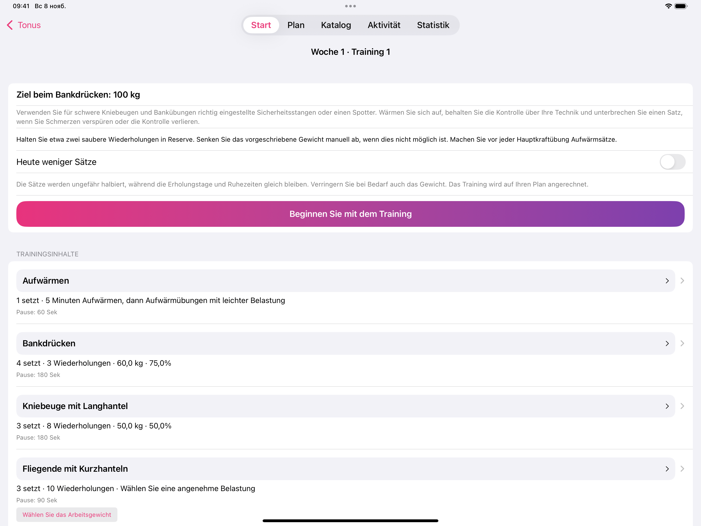
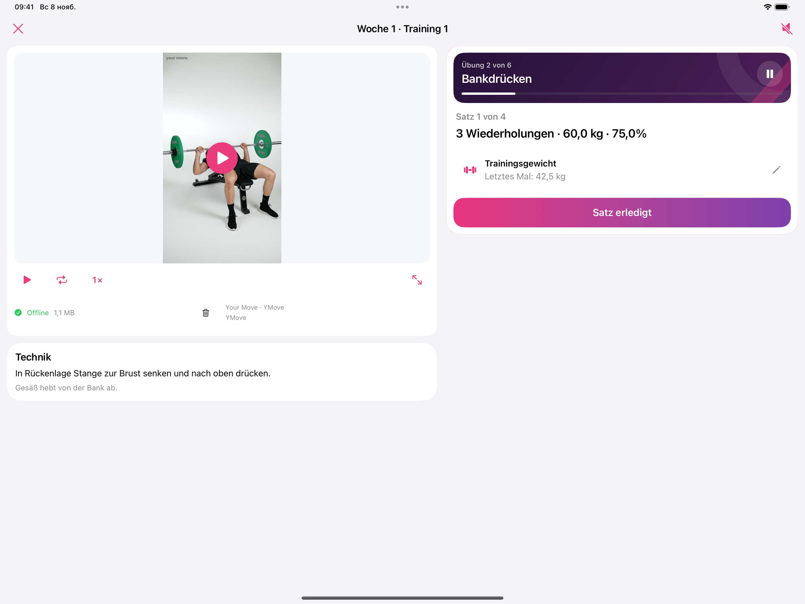

Von Nikita Revin, Entwickler von Tonus · 16. November 2026 · Tonus 1.7
Wenn für Ihre Krafteinheit heute weniger Zeit bleibt, öffnen Sie die nächste Einheit im Plan. Mit „Heute weniger Sätze“ können Sie sie mit weniger Sätzen pro Übungsblock starten.
Den Schalter vor dem Start setzen
Öffnen Sie an einem Trainingstag die nächste Einheit Ihres Kraftplans. Tippen Sie dafür in der Karte des Plans auf „Bereiten Sie sich auf das Training vor“. Auf der Detailseite steht „Heute weniger Sätze“ über „Beginnen Sie mit dem Training“. Schalten Sie die Option ein und starten Sie die Einheit. In der Vorschau für einen späteren Termin fehlt der Schalter.

Die Satzanzeige in der laufenden Einheit lesen
Die Liste unter „Trainingsinhalte“ zeigt vor dem Start den regulären Plan. Die gekürzte Satzanzahl sehen Sie in der laufenden Einheit. Aus vier Sätzen werden zwei, aus drei werden ebenfalls zwei. Ein Block mit nur einem Satz behält diesen Satz. Tonus übernimmt die Wiederholungen und die Pausen pro Satz aus dem Plan.
Im Beispiel steht unter „Bankdrücken“ in der regulären Einheit „Satz 1 von 4“. Wenn Sie diese Einheit mit dem Schalter starten, steht an derselben Stelle „Satz 1 von 2“. Die Zahl neben „Letztes Mal“ gehört zu Ihrem separat gespeicherten Trainingsgewicht.

Die Einheit im Plan abschließen
Beenden Sie die gekürzte Einheit über den normalen Trainingsabschluss. Tonus rechnet den Abschluss dem aktuellen Termin im Kraftplan an und verwendet die vorgesehenen Erholungstage für die nächste Einheit. Bei der nächsten startbereiten Einheit können Sie wieder entscheiden, wie viele Sätze Sie machen.